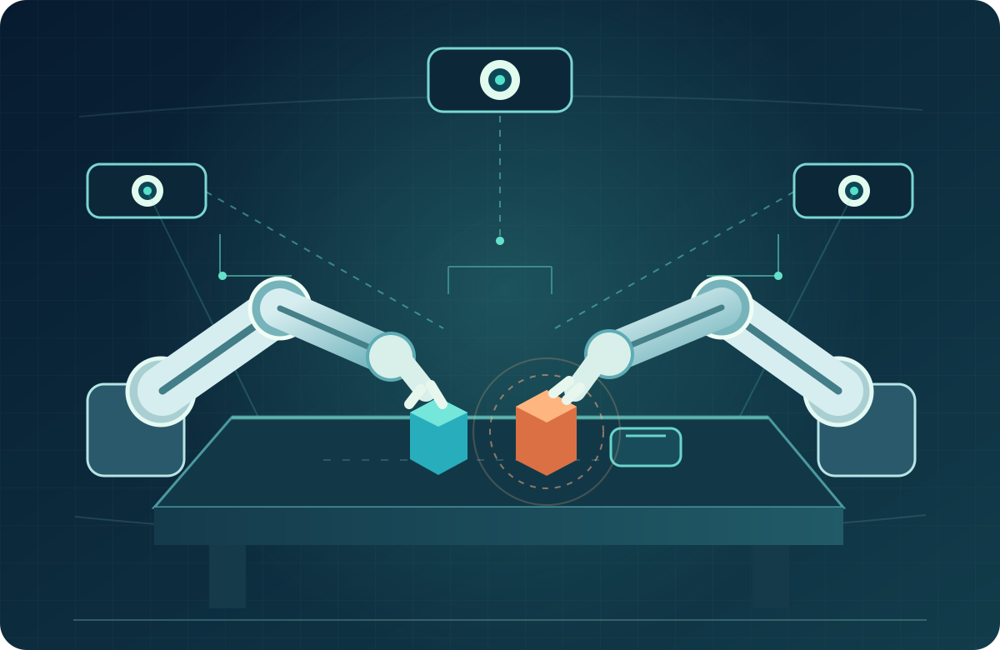
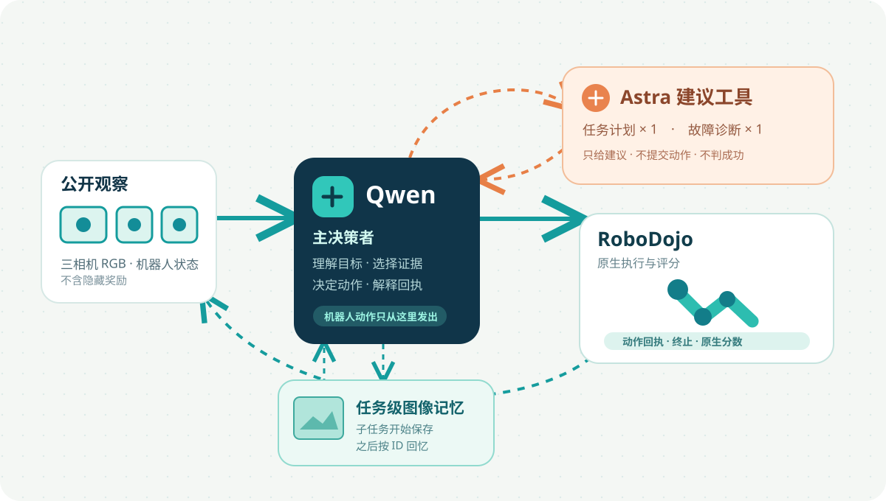
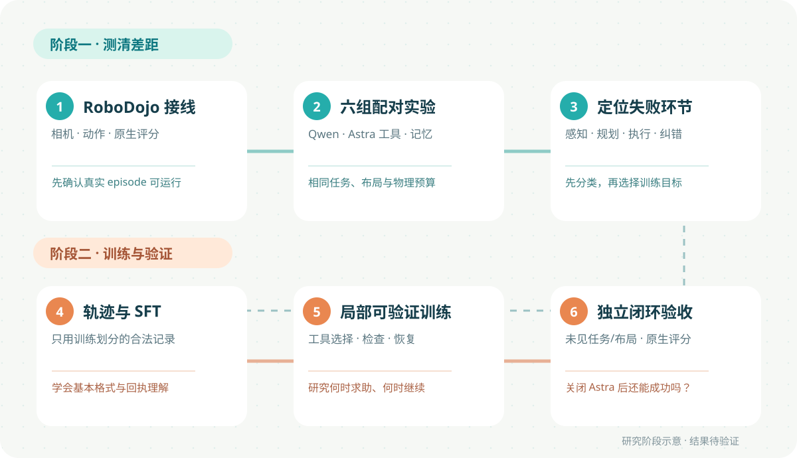

差距在哪里？
同一任务、同一动作接口，比较 Qwen Agent 与小样本完整 Astra Agent。
看各类任务和失败原因研究设计 / RoboDojo
用同一套机器人任务，比较 Qwen 与前沿模型；再看少量专家建议，能否真正帮助 Qwen。
这是实验设计汇报，尚无本项目真实 RoboDojo 跑分。

01 / 为什么研究
机器人需要一连串正确判断；任何一环都可能让任务失败。
找到目标和当前位置
拆解步骤和先后顺序
给出安全、有效的动作
失败后调整下一步
需要时找回过去所见
我们要找到：开源 Agent 与前沿模型的差距，究竟集中在哪些环节？
02 / 核心问题
同一任务、同一动作接口，比较 Qwen Agent 与小样本完整 Astra Agent。
看各类任务和失败原因仅让 Astra 给计划或诊断；Qwen 仍决定每一步机器人动作。
量出收益和调用成本后续训练后关闭 Astra，再测 Qwen 是否仍有进步。
用独立闭环测试回答以上都是待验证问题，不是已有结论。
03 / 初步系统设计
模型看到公开相机与机器人状态；动作由 Qwen 选择，成功由 RoboDojo 判定。

04 / 对照实验
未训练阶段的六个条件；混合组始终由 Qwen 操作机器人。
| 条件 | 任务规划 | 失败诊断 | 动作决策 | 起始图像记忆 |
|---|---|---|---|---|
| Qwen 基线q_only | Qwen | Qwen | Qwen | 关闭 |
| 规划工具hybrid_plan | Astra 首次建议¹ | Qwen | Qwen | 关闭 |
| 诊断工具hybrid_diagnose | Qwen | Astra 最多一次 | Qwen | 关闭 |
| 两种工具hybrid_both | Astra 首次建议¹ | Astra 最多一次 | Qwen | 关闭 |
| 加图像记忆hybrid_both_memory | Astra 首次建议¹ | Astra 最多一次 | Qwen | 开启 |
| 前沿模型参照astra_reference | Astra | Astra | Astra | 关闭 · 小样本 |
¹ Astra 最多给 1 次初始计划；用尽配额后由 Qwen 重新规划。完整 Astra 是单独的参考组，不受混合组 2 次工具调用上限约束。查看六组关系图 ↗窄屏可左右滑动表格。
05 / 任务级图像记忆
在开启记忆的条件中，每个子任务开始保存初始图像，需要回顾时按子任务 ID 找回。
绑定 task / episode / subtask ID。
当前相机不一定还能回答问题。
与当前图像并列，交由 Qwen 判断。
06 / RoboDojo 实验任务
先核对相机、合法动作、原生评分与 Qwen 是否能产生有效操作。
先确认链路可用检验定位与控制精度。
检验步骤规划与纠错。
检验起始图像回忆是否有用。
运行中演示可能超出起始图记忆。
首轮配置目前含 general_pickup、cover_blocks、fill_pen_holder；其他任务属于后续扩展计划。
07 / 如何解释实验
下面是结论判读方式，尚不是实验结果。
混合规划组比 Qwen 基线更好，说明任务拆解可能是关键瓶颈。
→ 继续看动作是否仍失败失败后恢复更多、重复错误更少，说明反馈理解可能有改善空间。
→ 同时报告额外调用成本先审查视觉证据和动作控制；不能直接断言“规划与诊断无用”。
→ 必须看失败轨迹08 / 第二阶段：让 Qwen 真正学会
训练后仍用独立 RoboDojo 闭环来验收，而不拿离线得分代替机器人成功。

借鉴 RoboICL、ToolRL、Router-R1 等的方法线索；新增论文尚未逐篇核读。Agentic RL 目前是规划，尚未训练模型。
09 / 当前进度与下一步
六组 Harness、Qwen/Astra 角色限制、任务级图像记忆、XPolicyLab 接入和结果汇总。
Isaac 仿真、Qwen 与 Astra 端点、RoboDojo 原生 episode、实际成功率和调用成本。